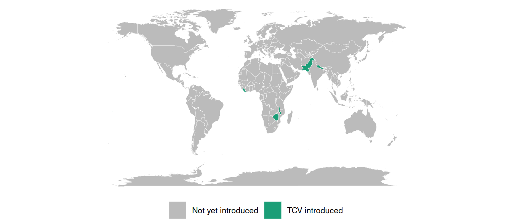
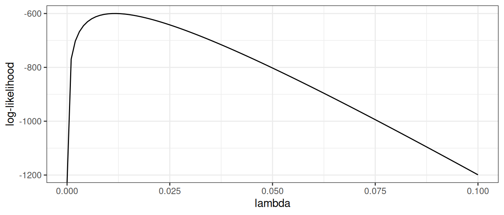
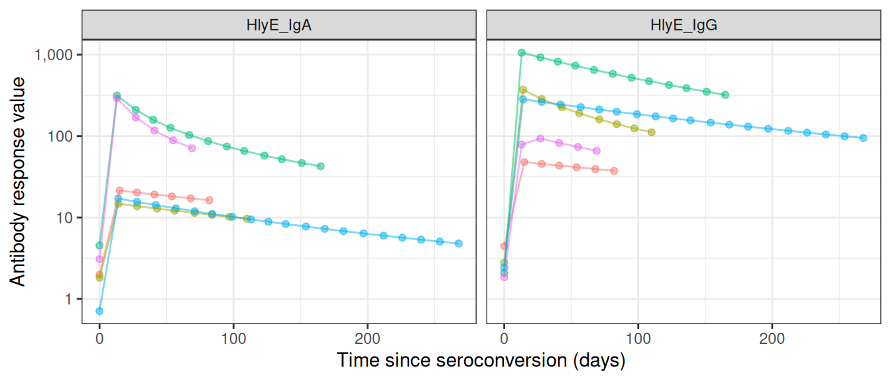
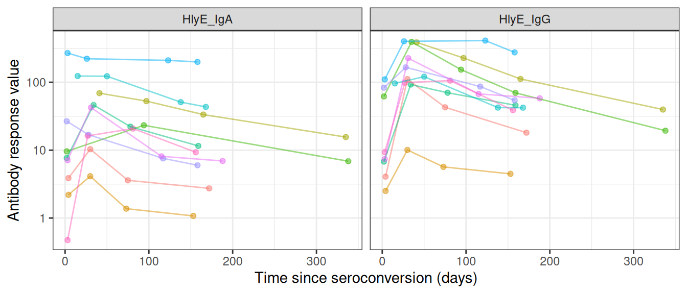
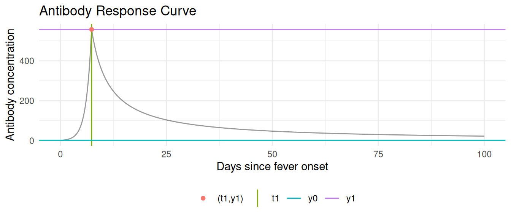
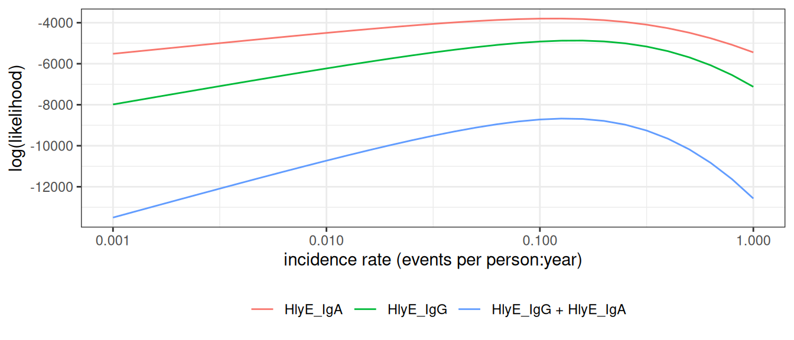

{kind=link}
{kind=link}

Estimating Incidence Rates from Cross-Sectional Serosurveys
1 Infectious disease epidemiology
1.1 Salmonella enterica (“typhoid fever”)
- ~21.7 million symptomatic cases/year
- ~217,000 deaths/year (~1% case fatality with treatment; up to 20% untreated)
- Highest burden: ages 5–19
- Symptoms: sustained high fever, severe headache, abdominal pain, malaise; rose-spot rash (~30% of patients); constipation (early) or diarrhea (later)


1.2 Shigella (“dysentery”)
- ~100 million infections annually
- ~100,000 deaths annually (~1% case fatality; higher in malnourished children)
- Most cases and deaths: children under 5 in low- and middle-income countries (LMICs)
- Symptoms: bloody diarrhea (dysentery), abdominal cramps, fever, tenesmus (painful urge to defecate)

1.3 Orientia tsutsugamushi (“scrub typhus”)
- ~1,000,000 infections/year
- ~10,000 deaths/year (~1% case fatality with treatment; up to 30% untreated)
- Symptoms: high fever, severe headache, myalgia; eschar (pathognomonic black scab at mite-bite site); macular rash; cough; gastrointestinal symptoms; hemorrhage in severe cases

2 Why estimate incidence from serosurveys?
2.1 The burden-data gap
Typhoid conjugate vaccines (TCVs) are 80-90% effective and WHO-recommended since 2018, but few countries have adopted them into routine immunization.
A major barrier is the lack of burden data: most low- and middle-income countries lack robust typhoid surveillance and have little or no incidence data.
These gaps block applications for vaccine funding, widening equity gaps in access to effective vaccines.
2.2 Seroepidemiology can fill the gap
The Seroepidemiology and Environmental Surveillance for Enteric Fever (SEES) study collected cross-sectional serosurveys across multiple countries to estimate typhoid incidence from antibody data (Aiemjoy et al. 2022).
2.3 Defining incidence
Definition 1 (Population incidence rate) The incidence rate of a disease over a specific time period is the rate at which individuals in a population are acquiring the disease during that time period (Noordzij et al. 2010).
Example 1 (Population incidence rate) If there are 10 new cases of typhoid in a population of 1000 persons during a one month time period, then the incidence rate for that time period is 10 new cases per 1000 persons per month.
2.4 Mathematical definition of incidence
More precisely, the incidence rate at time \(t\) is the rate of new infections per person at risk:
\[\lambda_t = \frac{1}{N(t)}\,\frac{d}{dt}\,\mathbb{E}[C(t)]\]
where \(C(t)\) is the cumulative number of infections and \(N(t)\) the number of individuals at risk at time \(t\).
2.5 Scale of incidence rates
In both definitions, the units for an incidence rate are “# new infections per # persons at risk per time duration”; for example, “new infections per 1000 persons per year”.
For convenience, we can rescale the incidence rate to make it easier to understand; for example, we might express incidence as “# new infections per 1000 persons per year” or “# new infections per 100,000 persons per day”, etc.
2.6 Incidence from an individual’s perspective
From the perspective of an individual in the population:
the incidence rate (at a given time point \(t\)) is the instantaneous probability density of becoming infected at that time point, given that they are at risk at that time point.
That is, the incidence rate is a hazard rate.
Notation: let’s use \(\lambda_{t}\) to denote the incidence rate at time \(t\).
3 Study designs for estimating incidence rates
3.1 Longitudinal cohort studies
Incidence rates can be estimated from longitudinal cohort studies, but cohort studies are:
- costly to conduct
- slow to produce results,
- vulnerable to selection and censoring (drop-out) biases
3.2 Clinical case data
Incidence rates can also be estimated from clinical case rates, but clinical case rates undercount:
- asymptomatic cases
- symptomatic cases who don’t receive clinical care.
3.3 Cross-sectional serosurveys
- accurate
- timely
- cost-efficient
See Hay et al. (2024) for overview
4 Estimating incidence from cross-sectional serosurveys
4.1 Goal
Easily and reproducibly translate quantitative antibody responses at the population level into meaningful and accurate epidemiological measures of infection burden.
4.2 Antibody responses are complicated
Using antibody levels to recover infection times is hard, because antibody responses:
- decay over time after infection
- vary from individual to individual (age, immune function, prior infections, vaccination)
- vary from measurement to measurement (assay noise)
- can cross-react with antibodies from other exposures
4.3 Cross-sectional antibody surveys
We recruit participants from the population of interest.
For each survey participant, we measure antibody levels \((Y)\) for the disease of interest
Each participant was most recently infected at some time \((T)\) prior to when we measured their antibodies.
- \(T\) is a latent, unobserved variable.
4.4 Modeling assumptions
We assume that:
- The incidence rate is approximately constant over time and across the population (“constant and homogenous incidence”)
- Participants are always at risk of a new infection, regardless of how recently they have been infected (“no lasting immunity”).
4.5 Time since infection and incidence
Under those assumptions:
- \(T\) has an exponential distribution:
\[\operatorname{p}(T=t) = \textcolor{red}{\lambda\operatorname{exp}\mathopen{}\left\{-\lambda t\right\}\mathclose{}}\]
- More precisely, the distribution is exponential truncated by age at observation (\(a\)):
\[ \operatorname{p}(T=t|A=a) = 1_{t \in[0,a]} \textcolor{red}{\lambda \operatorname{exp}\mathopen{}\left\{-\lambda t\right\}\mathclose{}} + 1_{t = \text{NA}} \operatorname{exp}\mathopen{}\left\{-\lambda a\right\}\mathclose{} \]
- the rate parameter \(\lambda\) is the incidence rate
4.6 Likelihood of latent infection times
\[\mathscr{L}^*(\lambda) = \prod_{i=1}^n \operatorname{p}(T=t_i \mid \lambda) = \prod_{i=1}^n \lambda \operatorname{exp}\mathopen{}\left\{-\lambda t_i\right\}\mathclose{}\]
\[\ell^*(\lambda) = \operatorname{log}\mathopen{}\left\{\mathscr{L}^*(\lambda)\right\}\mathclose{} = \sum_{i=1}^n \operatorname{log}\mathopen{}\left\{\lambda\right\}\mathclose{} -\lambda t_i\]
\[\ell^{*'}(\lambda) = \sum_{i=1}^n \mathopen{}\left(\lambda\right)^{-1}\mathclose{} - t_i\]
\[\hat{\lambda}_{\text{ML}} = \frac{n}{\sum_{i=1}^n t_i} = \frac{1}{\bar{t}}\]
4.7 Example log-likelihood curves

Figure 1: log-likelihood curve for latent data
4.8 Standard errors
The standard error of the estimate is approximately equal to the inverse of the curvature (2nd derivative, aka Hessian) of the log-likelihood function, at the maximum:
more curvature \(\rightarrow\) a sharper likelihood peak \(\rightarrow\) smaller standard errors
4.9 Hessian for the exponential model
For the latent-time exponential model, the log-likelihood is \[\ell^*(\lambda) = n\operatorname{log}\mathopen{}\left\{\lambda\right\}\mathclose{} - \lambda\sum_{i=1}^n t_i\]
so the score and the Hessian (here a scalar second derivative) are
\[ \ell^{*\prime}(\lambda) = \frac{n}{\lambda} - \sum_{i=1}^n t_i, \qquad \ell^{*\prime\prime}(\lambda) = -\frac{n}{\lambda^2} \]
Evaluated at the MLE \(\hat\lambda = 1/\bar t\), the variance and standard error are
\[ \widehat{\operatorname{Var}}(\hat\lambda) \approx \left[-\ell^{*\prime\prime}(\hat\lambda)\right]^{-1} = \frac{\hat\lambda^2}{n}, \qquad \operatorname{SE}(\hat\lambda) \approx \frac{\hat\lambda}{\sqrt{n}} \]
4.10 Likelihood of observed data
- \[\operatorname{p}(Y=y) = \int_t \operatorname{p}(Y=y,T=t)dt\]
- \[\operatorname{p}(Y=y,T=t) = \operatorname{p}(Y=y|T=t) \operatorname{p}(T=t)\]
4.11 Antibody response curves

Figure 2: Antibody response curves, \(p(Y=y|T=t)\), for typhoid

Figure 3: Observed antibody measurements over time since fever onset, for typhoid
4.12 The per-person likelihood
Substituting \(p(Y=y,T=t) = p(Y=y|T=t)\,p(T=t)\) into the previous expression for \(p(Y=y)\):
\[ \begin{aligned} p(Y=y) &= \int_t p(Y=y|T=t)\,p(T=t)\, dt \end{aligned} \]
\[ p(Y=y) = \int_0^a p(Y=y\mid T=t)\,\lambda\operatorname{exp}\mathopen{}\left\{-\lambda t\right\}\mathclose{}\,dt \;+\; p(Y=y\mid T=\text{NA})\cdot \operatorname{exp}\mathopen{}\left\{-\lambda a\right\}\mathclose{} \]
The first term is the contribution from subjects infected at least once; the second is the contribution from subjects never infected.
4.13 The full-sample likelihood
\[ \begin{aligned} \mathcal{L}(\lambda) &= \prod_{i=1}^n p(Y=y_i) \\&= \prod_{i=1}^n \int_t p(Y=y_i|T=t)p_\lambda(T=t)dt\\ \end{aligned} \]
4.14 Finding the MLE numerically
\[ \begin{aligned} \log \mathcal{L} (\lambda) &= \log \prod_{i=1}^n \int_t p(Y=y_i|T=t)p_\lambda(T=t)dt\\ &= \sum_{i=1}^n \log\left\{\int_t p(Y=y_i|T=t)p_\lambda(T=t)dt\right\}\\ \end{aligned} \]
4.15 Cluster-robust standard errors for clustered sampling designs
In many survey designs, observations are clustered (e.g., multiple individuals from the same household, school, or geographic area). Observations within the same cluster are often more similar to each other than to observations from different clusters, violating the independence assumption of standard maximum likelihood estimation.
Why clustering matters
When observations are clustered:
- Individuals within the same cluster share common exposures or characteristics
- Standard errors that ignore clustering will be too small (anti-conservative)
- Confidence intervals will be too narrow
- p-values will be too optimistic
Cluster-robust variance estimation
To account for within-cluster correlation, serocalculator implements the sandwich estimator (also known as the Huber-White robust variance estimator):
\[V_{\text{robust}} = H^{-1} B H^{-1}\]
where:
- \(V_{\text{robust}}\) is the cluster-robust variance-covariance matrix for the parameter estimates
- \(H\) is the Hessian matrix (matrix of second partial derivatives of the log-likelihood with respect to the parameters, evaluated at the MLE \(\hat{\lambda}\))
- \(B\) is the “meat” of the sandwich, calculated from cluster-level score contributions:
\[B = \sum_{c=1}^C U_c U_c^T\]
where:
- \(C\) is the total number of clusters in the sample
- \(U_c = \sum_{i \in c} \nabla_\lambda \log p(Y_i | \lambda)\) is the score contribution (gradient of log-likelihood with respect to \(\lambda\)) from all observations in cluster \(c\)
- \(\nabla_\lambda\) denotes the gradient operator (vector of partial derivatives with respect to the parameter \(\lambda\))
Implementation in serocalculator
Users can specify clustering using the cluster_var parameter:
When cluster-robust standard errors are used, the summary() output indicates this with se_type = "cluster-robust".
Effect on results
- Point estimates (incidence rates) remain unchanged
- Standard errors often increase to reflect within-cluster correlation
- Confidence intervals appropriately widen to account for reduced effective sample size
5 Modeling the seroresponse kinetics curve
5.1 Model for active infection period
Notation:
- \(x(t)\): pathogen concentration at time \(t\)
- \(y(t)\): antibody concentration at time \(t\)
- \(\mu_0\): pathogen growth rate; \(\beta\): pathogen-inactivation strength; \(\mu\): antibody growth rate
Model:
- \[x'(t) = \mu_0\, x(t) - \beta y(t)\]
- \[y'(t) = \mu\, y(t)\]
5.2 Model for post-infection antibody decay
Once the pathogen is cleared (\(x(t) = 0\)), the antibody concentration decays:
- \[y^{\prime}(t) = -\alpha y(t)^r\]
5.3 Assembling the full response curve
The serum antibody response \(y(t)\) can be written as
\[ y(t) = y_{+}(t) + y_{-}(t) \]
where
\[ \begin{align} y_{+}(t) & = y_{0}\text{e}^{\mu t}[0\leq t <t_{1}]\\ y_{-}(t) & = y_{1}\left(1+(r-1)y_{1}^{r-1}\alpha(t-t_{1})\right)^{-\frac{1}{r-1}}[t_{1}\le t < \infty] \end{align} \]
5.5 From the full model to the observed curve
During infection (\(t < t_1\)): the antibody equation \(y'(t) = \mu\, y(t)\) gives exponential growth, \(y(t) = y_0\, e^{\mu t}\).
The pathogen equation sets the peak time \(t_1\): circulating antibodies inactivate the pathogen (the \(-\beta y(t)\) term), driving \(x(t)\) to zero at \(t_1\). Once the pathogen is cleared, stimulation stops and decay begins, so the peak antibody level is \(y_1 = y_0\, e^{\mu t_1}\).
After the peak (\(t \ge t_1\)): power-law decay, \(y'(t) = -\alpha y(t)^r\).

Figure 4: An example kinetics curve for HlyE IgG
Interactive Shiny app: https://ucdserg.shinyapps.io/antibody-kinetics-model-2/

QR code for the antibody-kinetics Shiny app
5.6 Biological noise
Notation:
- \(y_\text{obs}\): measured serum antibody concentration
- \(y_\text{true}\): “true” serum antibody concentration
- \(\epsilon_b\): noise due to probe cross-reactivity
Model:
- \(y_\text{obs} = y_\text{true} + \epsilon_b\)
- \(\epsilon_b \sim \text{Unif}(0, \nu)\)
\(\nu\) needs to be pre-estimated using negative controls, typically using the 95th percentile of the distribution of antibody responses to the antigen-isotype in a population with no exposure.
5.7 Measurement noise
There are also some other sources of noise in our bioassays; user differences in pipetting technique, random ELISA plate effects, etc. This noise can cause both overcount and undercount. We can also estimate the magnitude of this noise source and include it in \(p(Y=y|T=t)\).
Measurement noise, \(\varepsilon\) (“epsilon”), represents measurement error from the laboratory testing process.
Unlike biological noise, measurement noise is multiplicative: the error scales with the true concentration (equivalently, it is additive on a log scale), and it has mean zero, so on average it neither inflates nor deflates the measured concentration.
Notation:
- \(y_\text{obs}\): measured serum antibody concentration
- \(y_\text{true}\): “true” serum antibody concentration
- \(\xi\): relative measurement error
- \(\varepsilon\): bound on the relative error
Model:
- \(y_\text{obs} = y_\text{true} \cdot (1 + \xi)\)
- \(\xi \sim \text{Unif}(-\varepsilon, \varepsilon), \quad 0 \le \varepsilon < 1\)
Here \(\varepsilon\) is the bound on the relative error, not a coefficient of variation (CV). Assay precision is often reported as a CV, the ratio of the standard deviation to the mean for replicates, ideally measured across plates rather than within the same plate. Under this uniform model the CV equals \(\varepsilon/\sqrt{3}\), so a measured CV corresponds to \(\varepsilon = \sqrt{3}\,\text{CV}\).
5.8 Combined biological and measurement noise
In practice both noise sources are usually present at once. The two are applied in sequence (Teunis and Eijkeren 2020): biological noise is added to the true concentration, and measurement noise then scales the result.
Model:
- \(y_\text{obs} = (y_\text{true} + \epsilon_b)(1 + \xi)\)
- \(\epsilon_b \sim \text{Unif}(0, \nu)\)
- \(\xi \sim \text{Unif}(-\varepsilon, \varepsilon)\)
This is the model serocalculator uses whenever a noise_params row has both \(\nu > 0\) and \(\varepsilon > 0\); setting either width to zero recovers the corresponding single-source model above.
5.9 Noise and never-infected subjects
A subject who has never been infected has true antibody concentration \(y_\text{true} = 0\); the probability of never having been infected by age \(a\) is \(\operatorname{exp}\mathopen{}\left\{-\lambda a\right\}\mathclose{}\). The two noise sources treat such a subject very differently (Teunis and Eijkeren 2020):
Biological noise is additive, so a never-infected subject is measured as \(y_\text{obs} = 0 + \epsilon_b \sim \text{Unif}(0, \nu)\). Cross-reactivity can register a positive signal even when there was no true response, so never-infected subjects still contribute a spread-out distribution of small positive values, not a single spike at zero.
Measurement noise is multiplicative, so a never-infected subject is measured as \(y_\text{obs} = 0 \cdot (1 + \xi) = 0\). A relative error cannot move a true zero, so measurement noise alone leaves these subjects exactly at zero.
So the probability mass at \(y = 0\) from never-infected subjects (with weight \(\operatorname{exp}\mathopen{}\left\{-\lambda a\right\}\mathclose{}\)) survives measurement noise but is smeared into small positive values by biological noise. This also explains why the biological-noise width \(\nu\) can be estimated from a known unexposed population: those subjects are essentially all never-infected, so their measured antibody levels are, to good approximation, draws from the biological-noise distribution itself.
Under both noise sources together, the never-infected contribution is neither of these two single-source shapes. Substituting \(y_\text{true} = 0\) into the combined model gives
\[ y_\text{obs} = \epsilon_b (1 + \xi), \qquad \epsilon_b \sim \text{Unif}(0, \nu), \quad \xi \sim \text{Unif}(-\varepsilon, \varepsilon), \]
a product of two independent uniform random variables, not itself uniform. Following the same conditioning argument Teunis and van Eijkeren use to derive their combined-noise density (Teunis and Eijkeren 2020), its density (the never-infected contribution to the overall observed density, including the never-infected weight \(\operatorname{exp}\mathopen{}\left\{-\lambda a\right\}\mathclose{}\)) is
\[ \rho_{bm}(y \mid \text{never-infected}) = \begin{cases} \dfrac{\operatorname{exp}\mathopen{}\left\{-\lambda a\right\}\mathclose{}}{2\varepsilon\nu} \log\!\left(\dfrac{1+\varepsilon}{1-\varepsilon}\right) & 0 < y \le \nu(1-\varepsilon) \\[8pt] \dfrac{\operatorname{exp}\mathopen{}\left\{-\lambda a\right\}\mathclose{}}{2\varepsilon\nu} \log\!\left(\dfrac{\nu(1+\varepsilon)}{y}\right) & \nu(1-\varepsilon) < y < \nu(1+\varepsilon) \\[8pt] 0 & y \ge \nu(1+\varepsilon) \end{cases} \]
The first piece matches Teunis and van Eijkeren’s Equation 19: it is flat (constant in \(y\)) over most of its support, then tapers to zero by \(y = \nu(1+\varepsilon)\). Integrating both pieces over their full range recovers exactly \(\operatorname{exp}\mathopen{}\left\{-\lambda a\right\}\mathclose{}\), the never-infected probability, confirming the density is correctly normalized. As \(\varepsilon \to 0\) the flat piece reduces to \(\operatorname{exp}\mathopen{}\left\{-\lambda a\right\}\mathclose{}/\nu\), the biological-noise-only density on \([0, \nu]\), matching the single-source case above.
5.10 Multiple biomarkers

Figure 5: Example log(likelihood) curves
5.11 Variation in antibody kinetics: by country
Antibody-decay kinetics are not identical across populations. Estimated seroresponse parameters vary by country, age, and serotype (Typhi vs Paratyphi A).

Decay curves (A), peak antibody levels (B), and decay rates (C) for HlyE and LPS (IgG/IgA), by country (Bangladesh, Pakistan, Nepal, Ghana). SEES study.
5.12 Variation in antibody kinetics: by age and serotype

Decay curves by age stratum (<5, 5–15, 16+) and serotype (Typhi vs Paratyphi A), for HlyE and LPS (IgG/IgA). SEES study.
6 Estimating the curves with serodynamics
6.1 Where do the curve parameters come from?
The decay curves above are themselves estimated from longitudinal antibody measurements on confirmed cases — individuals with a known infection date who are sampled repeatedly afterward. Fitting the two-phase model to those data yields, for each antigen-isotype, the parameters the incidence model needs:
- baseline antibody level (\(y_0\))
- peak concentration (\(y_1\))
- time to peak (\(t_1\))
- decay rate (\(\alpha\))
- decay shape (\(r\))
6.2 The serodynamics package
serodynamics is an open-source R package that fits this two-phase within-host kinetics model with a Bayesian hierarchical model, sampled by MCMC (via JAGS). The hierarchical structure stabilizes individual-level estimates by borrowing strength across participants — valuable when longitudinal data are sparse.
6.3 A typical serodynamics workflow
6.4 What a fitted model looks like
The package ships a cached example fit; plot_jags_dens() shows the posterior densities of the five kinetic parameters (here HlyE IgG, Typhi), overlaid by MCMC chain:

Posterior densities of the five kinetic parameters from the cached nepal_sees_jags_output fit (HlyE IgG, Typhi), by MCMC chain.
6.5 Two packages, one pipeline
serodynamics(upstream): longitudinal confirmed-case data \(\rightarrow\) estimated antibody-decay curve parametersserocalculator(downstream): a cross-sectional serosurvey plus those curve parameters \(\rightarrow\) a seroincidence estimate
The output of serodynamics feeds directly into serocalculator’s est_seroincidence_by().
6.6 Propagating uncertainty and heterogeneity
The seroresponse model \(\operatorname{p}(Y=y|T=t)\) is not a single fixed curve. serodynamics returns a posterior sample of curve-parameter sets \(\theta^{(1)},\dots,\theta^{(M)}\) (each \(\theta^{(k)} = (y_0, y_1, t_1, \alpha, r)^{(k)}\)), which together capture both
- estimation uncertainty in the kinetics parameters, and
- between-person / between-case heterogeneity in the seroresponse.
The incidence likelihood averages over these draws (Monte Carlo integration), so each person’s contribution becomes
\[ \operatorname{p}(Y=y) \approx \frac{1}{M}\sum_{k=1}^{M} \int_t \operatorname{p}(Y=y|T=t, \theta^{(k)})\; \operatorname{p}_\lambda(T=t)\, dt \]
6.7 Random effects and variance over time
The longitudinal model distinguishes two kinds of variation:
- Conditional observation noise: given a person’s kinetic parameters \(\theta_i\), residual noise has constant variance on the log-antibody scale.
- Marginal population variation: because \(\theta_i\) includes random effects — notably the waning rate \(\alpha_i\) — individual trajectories can spread apart with increasing time since infection.
Thus, even without an explicit time-varying residual variance \(\sigma^2(t)\), the variance around the population mean trajectory can vary with \(t\):
\[ \operatorname{Var}(\log Y(t)\mid T=t) = \sigma_{\log Y}^2 + \operatorname{Var}_{\theta}\!\left[\log y(t;\theta)\right]. \]
7 Using serocalculator
7.1 An open-source R package
The methods in this lecture are implemented in the open-source serocalculator R package.
7.2 Estimating seroincidence
7.3 Interactive Shiny app
A point-and-click interface is available at https://ucdserg.shinyapps.io/shiny_serocalculator/.

8 Validation: recovering known incidence rates
8.1 Simulating clusters with known incidence
We can check the method by simulating cross-sectional serosurveys with known incidence rates and seeing whether the estimates recover them. sim_pop_data_multi() simulates several clusters, each at a specified true rate \(\lambda\):
8.2 Estimates recover the simulated rates

Estimated incidence rates (points, with 95% CIs) for the simulated clusters track the true simulated rates (dashed identity line).
8.3 In-progress work
Extending and improving existing Shiny apps for these methods (e.g., the serocalculator Shiny app, source)
Multivariate modeling of biomarkers (relaxing conditional independence)
A graphical (Shiny) app for
serodynamicsModeling time-varying incidence rates
Accounting for re-exposure
Accounting for latent immunocompromised subpopulations
Calibrating to population demographics
8.4 Multiple biomarkers: beyond conditional independence
With several biomarkers (e.g. HlyE IgA and IgG), the current method treats them as conditionally independent given the time since infection, so the joint likelihood factors into a product of per-biomarker terms:
\[ \operatorname{p}(Y_1 = y_1, Y_2 = y_2 \mid T=t) = \operatorname{p}(Y_1 = y_1 \mid T=t)\,\operatorname{p}(Y_2 = y_2 \mid T=t) \]
Kwan Ho Lee (UCD-SERG) is relaxing this to allow covariance among biomarkers — a multivariate seroresponse model with a Kronecker-structured covariance, fit in Stan (UCD-SERG/shigella#13).
References
Aiemjoy, K., Seidman J. C., Saha S., Munira S. J., Islam Sajib M. S., and Sarkar Sium S. M. al. 2022. “Estimating Typhoid Incidence from Community-Based Serosurveys: A Multicohort Study.” The Lancet Microbe 3 (8): e578–87. https://doi.org/10.1016/S2666-5247(22)00114-8.
Hay, James A., Isobel Routledge, and Saki Takahashi. 2024. “Serodynamics: A Primer and Synthetic Review of Methods for Epidemiological Inference Using Serological Data.” Epidemics 49: 100806. https://doi.org/10.1016/j.epidem.2024.100806.
Noordzij, Marlies, Friedo W. Dekker, Carmine Zoccali, and Kitty J. Jager. 2010. “Measures of Disease Frequency: Prevalence and Incidence.” Nephron Clinical Practice 115 (1): c17–20. https://doi.org/10.1159/000286345.
Teunis, P. F. M., and J. C. H. van Eijkeren. 2020. “Estimation of Seroconversion Rates for Infectious Diseases: Effects of Age and Noise.” Statistics in Medicine 39 (21): 2799–814. https://doi.org/10.1002/sim.8578.
Teunis, P. F. M., J. C. H. van Eijkeren, W. F. de Graaf, A. Bonačić Marinović, and M. E. E. Kretzschmar. 2016. “Linking the Seroresponse to Infection to Within-Host Heterogeneity in Antibody Production.” Epidemics 16 (September): 33–39. https://doi.org/10.1016/j.epidem.2016.04.001.
Volterra, Vito. 1928. “Variations and Fluctuations of the Number of Individuals in Animal Species Living Together.” ICES Journal of Marine Science 3 (1): 3–51.